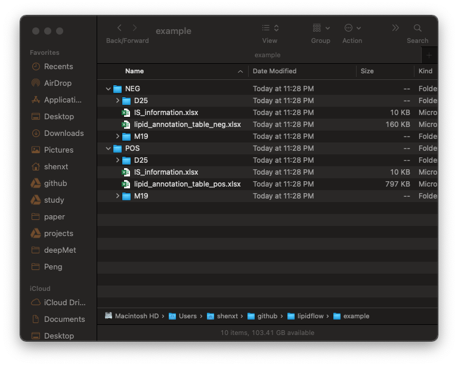

vignettes/get_is_retention_time.Rmd
get_is_retention_time.RmdFirst, we need to get the retention time (RTs) of internal standards in samples. Here we also use the demo data from lipidflow package to show how to use.
library(lipidflow)
#> ✓ xcms 3.12.0 ✓ MSnbase 2.16.0
#> ✓ mzR 2.24.1
#> lipidflow,
#> More information can be found at https://jaspershen.github.io/lipidflow/
#> If you use lipidflow in you publication, please cite this publication:
#> Metabolic reaction network-based recursive metabolite annotation for untargeted metabolomics.
#> Authors: Xiaotao Shen & Chuchu Wang
#> Maintainer: Xiaotao Shen (shenxt1990@163.com).
library(tidyverse)
#> ── Attaching packages ─────────────────────────────────────── tidyverse 1.3.0 ──
#> ✓ ggplot2 3.3.3 ✓ purrr 0.3.4
#> ✓ tibble 3.0.4 ✓ dplyr 1.0.2
#> ✓ tidyr 1.1.2 ✓ stringr 1.4.0
#> ✓ readr 1.4.0 ✓ forcats 0.5.0
#> ── Conflicts ────────────────────────────────────────── tidyverse_conflicts() ──
#> x dplyr::collect() masks xcms::collect()
#> x dplyr::combine() masks MSnbase::combine(), Biobase::combine(), BiocGenerics::combine()
#> x tidyr::expand() masks S4Vectors::expand()
#> x dplyr::filter() masks stats::filter()
#> x dplyr::first() masks S4Vectors::first()
#> x dplyr::groups() masks xcms::groups()
#> x dplyr::lag() masks stats::lag()
#> x ggplot2::Position() masks BiocGenerics::Position(), base::Position()
#> x purrr::reduce() masks MSnbase::reduce()
#> x dplyr::rename() masks S4Vectors::rename()
pos_data = system.file("POS", package = "lipidflow")
neg_data = system.file("NEG", package = "lipidflow")
path = file.path(".", "example")
dir.create(path)
file.copy(from = pos_data, to = path, recursive = TRUE, overwrite = TRUE)
#> [1] TRUE
file.copy(from = neg_data, to = path, recursive = TRUE, overwrite = TRUE)
#> [1] TRUENow there will be a example folder in your work directory. And in the example folder, there are two folders: POS and NEG. The are two groups for each mode: “D25” and “M19”. And each group has two repeats.

We then use the get_IS_RT() function to extract the peaks for each internal standard in samples.
We need to extract internal standards for positive and negative mode, respectively.
We need to choose which class samples are used to extract internal standards. Here we use D25, so we set path as POS/D25. We also need the internal standard information (xlsx format), here is IS_information.xlsx in POS and NEG folders. It should be like the below figure shows:
There are five columns in this table:
name: the name of internal standards.
exact.mass: Exact mass.
formula: Formula of internal standards.
ug_ml: Concentration (ug/ul) in samples for each internal standard.
um: Concentration (um) in samples for each internal standard.
Read the internal information table (is_info_table);
is_info_table_pos =
readxl::read_xlsx("example/POS/IS_information.xlsx")Then we run get_IS_RT() function to extract internal standards in POS/D25 group.
is_info_table_new_pos =
get_IS_RT(
path = "example/POS/D25",
is_info_table = is_info_table_pos,
polarity = "positive",
threads = 3,
rerun = TRUE,
output_eic = TRUE
)
#> Positive mode...
#> Reading raw data, it will take a while...
#> Reading 18519 spectra from file D25_1.mzXML
#> Reading 18473 spectra from file D25_2.mzXML
#> ✓ OK
#> Extracting peaks, it will take a while...✓ OK
#> Output peak shapes...
#> 1 2 3 4 5 6 7 8 9 10 11 12 13 14 15 16 17 18 19 20 21 22 23 24 25 26 27 28 29 30 31 32 33 34 35 36 37 38 39 40 41 42 43 44 45 46 47 48 49 50 51 52 53 54 55 56 57 58 59 60 61 62 63 64 65 66 67 68 69 70 71 72 73 74 75 76 77 78 79 80 81
#> DoneThe parameters of get_IS_RT():
path: The folder contains D25 samples.
is_info_table: The internal standard information.
polarity: “positive” or “negative”.
threads: The number of cores to run.
rerun: If you set rerun as FALSE, then the peak detection will nor be rerun.
output_eic: Output EIC or not.
The is_info_table_new_pos is the table which has been added the information of internal standards:
head(is_info_table_new_pos)
#> # A tibble: 6 x 9
#> name exact.mass formula ug_ml um rt_pos_second rt_pos_min adduct_pos
#> <chr> <dbl> <chr> <dbl> <dbl> <dbl> <dbl> <chr>
#> 1 15:0… 588. C36H61… 0.22 0.375 1147. 19.1 M+H-H2O
#> 2 15:0… 690. C36H61… 0.172 0.25 783. 13.0 M+H
#> 3 15:0… 753. C41H73… 1.88 2.5 1182. 19.7 M+H
#> 4 15:0… 711. C38H67… 0.125 0.175 1193. 19.9 M+H
#> 5 15:0… 764. C39H67… 0.095 0.125 1181. 19.7 M+H
#> 6 15:0… 847. C42H75… 0.422 0.5 1147. 19.1 M+H
#> # … with 1 more variable: mz_pos <dbl>We then output the table into local folder:
openxlsx::write.xlsx(
is_info_table_new_pos,
file = "example/POS/IS_info_new.xlsx",
asTable = TRUE
)Negative mode is same with positive mode.
is_info_table_neg =
readxl::read_xlsx("example/NEG/IS_information.xlsx")
is_info_table_new_neg =
get_IS_RT(
path = "example/NEG/D25",
is_info_table = is_info_table_neg,
polarity = "negative",
threads = 3,
rerun = TRUE,
output_eic = TRUE
)
#> Negative mode...
#> Reading raw data, it will take a while...
#> Reading 15433 spectra from file D25_1.mzXML
#> Reading 15080 spectra from file D25_2.mzXML
#> ✓ OK
#> Extracting peaks, it will take a while...✓ OK
#> Output peak shapes...
#> 1 2 3 4 5 6 7 8 9 10 11 12 13 14 15 16 17 18 19 20 21 22 23 24 25 26 27 28 29 30
#> Done
openxlsx::write.xlsx(
is_info_table_new_neg,
file = "example/NEG/IS_info_new.xlsx",
asTable = TRUE
)Next we need to get the relative quantification data of all internal standards in all sample. Please click here: Get relative quantification data